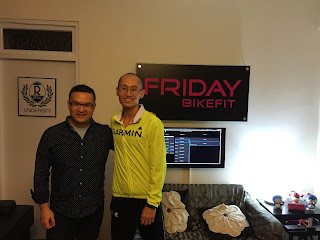
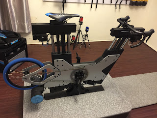
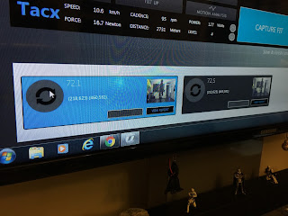
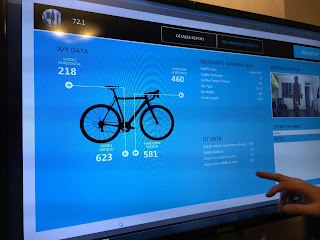
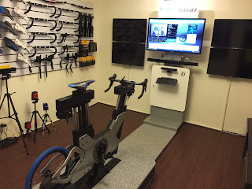

到台北巷弄中拜訪國際級的 FRIDAY BIKEFIT

昨天在益弘的介紹下，認識了一位很神奇的人物 Winston。他的職業是 Bike Fitter，工作內容可分為兩大類，幫客人找到適合尺寸的自行車以及幫你把自行車調到適合你目標的設定。
針對第一件工作，這個尺寸不只是像我們一般試鞋試衣服一樣只有 size 之分，尺寸包括龍頭長、立管角度、座桿高度、上管長度、座墊硬度等。fitter 會根據你的身體，給你一組個人化的數據，你就可以依此數據去買到符合你身材的自行車。我在現場看到定價百萬的電子 fitting 系統 GURU。Winston 特地要益弘騎上此百萬設備示範給我們看他的操作方式，他輸入龍頭長度與高度，龍頭馬上就移動到他指定的位置；他輸入座墊高度或前後位置，座墊馬上就跟著移動……我看 Winston 一邊設定，GURU 就跟著一直發出移動的聲音，同時一邊問益弘感覺舒服嗎？直到益弘感到完全滿意，前方的螢幕就出現益弘的所有設定資料，甚至符合目前市面上哪一款自行車都會顯示，之後益弘只要拿著這個數據就可以在市面上找到符合自己身材的自行車。




參訪過程中，有位選手來找 Winston 做 RETÜL 3D-Fitting(附圖中可看到原廠的照片)，我順口問為什麼要做 3D，他說的話發人省思：
「3D 才能看到踩踏中選手的原貌。」

我恍然一驚……我們開始討論起一位專家若只研究自己領域的專業，勢必看不到事情的全貌，所以各種專業知識都需要 3D-思維，我們必須努力理解其他專業，之後再從他們的角度來看待自己的專業，自己的專業才會變得更圓滿，自己也才會進步。
意識型態若根深蒂固，成見很深時，會接受不了新東西，所以我也一直告訴自己要虛心一點，「我的耐力運動知識就像一個圓，知識愈多，這個圓會愈大沒錯，但圓周所碰觸到的未知事物也愈多」，所以我會覺得自己不懂的東西愈來愈多。
準備離開前益弘說了他的心得，他也是一位 fitter，他說：「Fitter 就像美容美髮師，基本工具和技術一樣，但功力與風格各異……。」這回應了 Winston 說的：「Fitting 不只要看數據的純粹科學標準，它沒有標準，只有參考用的 Range(每一個數據的標準範圍)，那只是工具，要怎麼用這個工具就是 fitter 的藝術。」
這讓我想到《海上鋼琴師》中主角死前最後的告白：「因為琴鍵有限，所以琴藝無限。如果我面前的鋼琴有無限的琴鍵(沒有 Range)，我就根本不知該如何演奏了！船外的世界對我來說就是一部有無限琴鍵的鋼琴，一部我無法彈奏的鋼琴。」
像 RETUL 和 GURU 對 Winston 來說只是一種給定參考指標的工具，因為有它，所以它能針對不同的選手來發揮他的 Fitting 的技藝。
Winston 在加拿大多倫多、北京中國、香港九龍和台北都有工作室，時常要當空中飛人去世界各地幫選手做 Fitting。有興趣的可到他的官網看看：http://www.fridayfitness.ca/#
最後，我們聊到他回來華人圈推廣 Fitting 的理念：我不會怕別人學會我的東西，我喜歡分享，愈多人會 Fitting 愈好。這樣才能討論，才能進步，才能形成文化，生態圈才會愈來愈完整。我聽了心裡猛點頭，說得實在太好了！
我們都追求「一起變得更好」的人生價值。很高興能認識他，也趁機把這樣的專業分享給喜歡騎自行車的朋友。目前全台各地有接近十家專門替人家做 fitting 的機構，但益弘跟我說，談到功力，Winston 走在最前面，「因為他太特別了！」